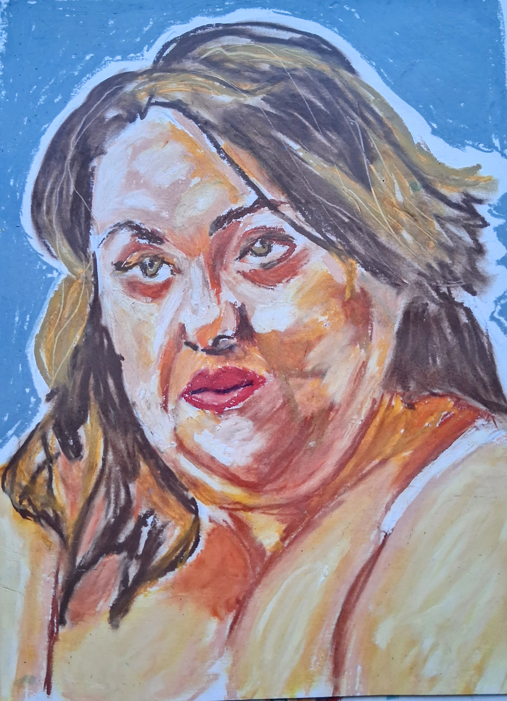
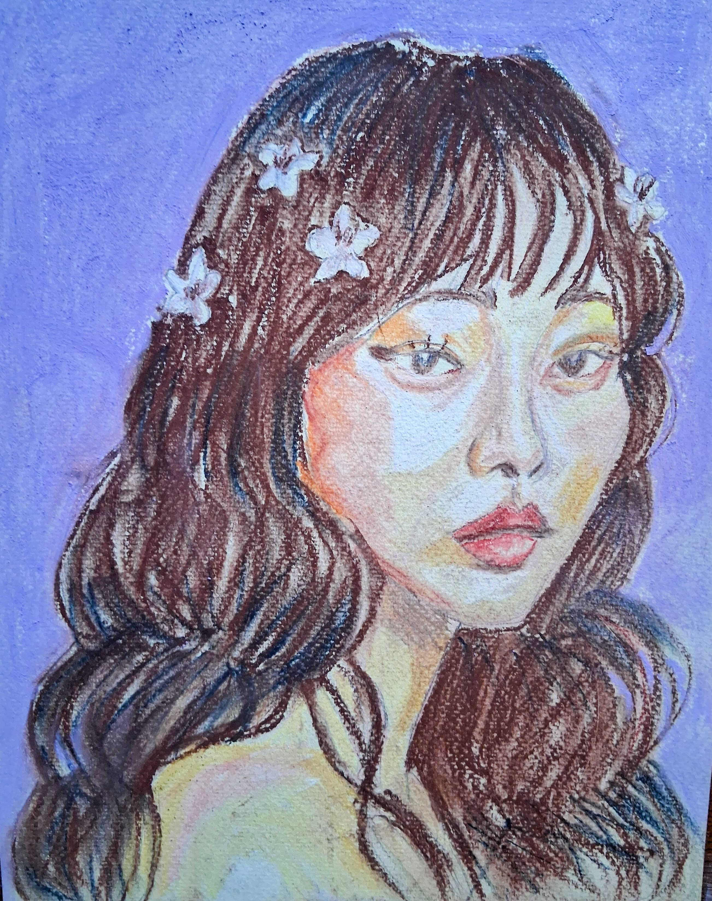
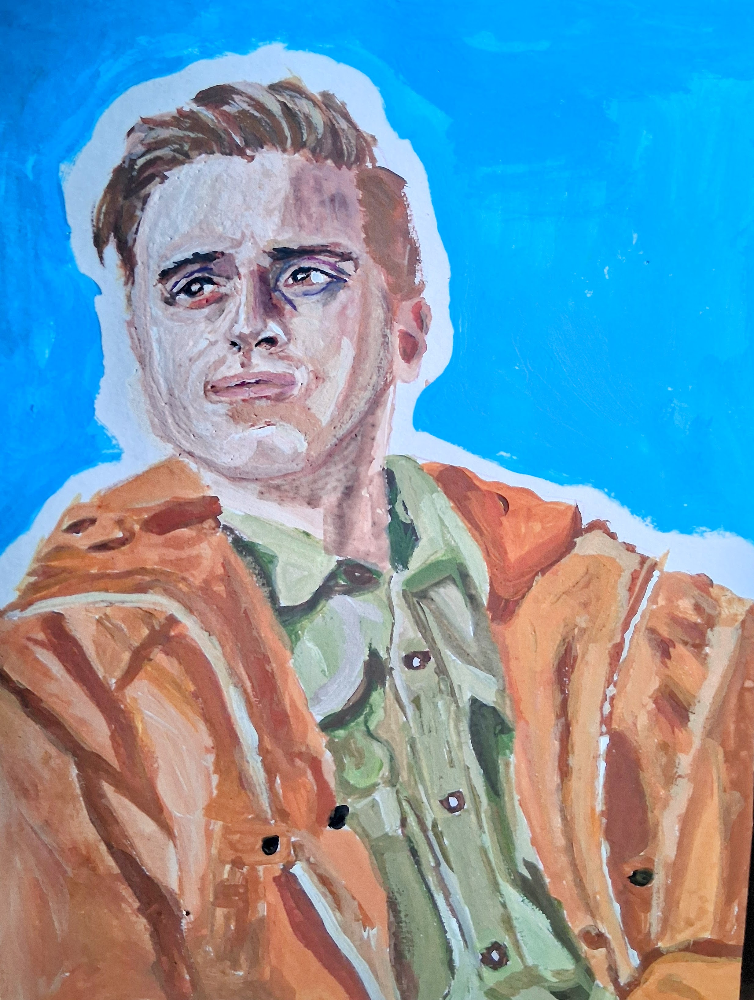
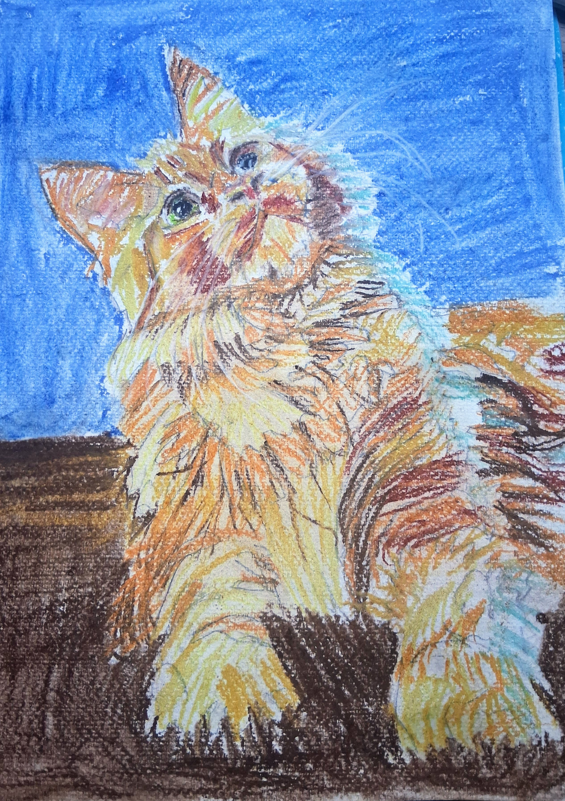

Small studies,
built one layer
at a time.
A collection of pastel, watercolor, and mixed-media pieces that after drawing and painting brought me joy.

Recent pieces
A quick look at what's new — the full collection lives on the Works page.

Hopeful
Soft pastel

Outlook on a train
Acryla Gouache

Cats Of Wonder
Soft pastel